Scenté
A candle e-commerce website with an Autumn collection — focused on clean layout and a warm, editorial aesthetic.
Hi there, I'm Mariana Mesquita.
Web developer and designer crafting intuitive, purpose-driven experiences through front-end development, thoughtful design, and AI-assisted workflows.

A candle e-commerce website with an Autumn collection — focused on clean layout and a warm, editorial aesthetic.

Character explorer with the Rick and Morty API — search and filter using async/await and fetch.

Interactive fortune cookie app built with Next.js, TypeScript and Tailwind CSS.
Horoscope PWA built with Prompt-Driven Development — daily horoscopes and zodiac compatibility.

I'm a web developer based in Toronto who enjoys creating simple, intuitive, and distinctive digital experiences.
I approach projects by breaking complex problems into clear steps while exploring different tools and technologies, including AI, to develop thoughtful and effective solutions. My focus is on building interfaces that are visually balanced, functional, and easy for users to navigate.